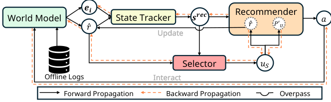

DARLR: Dual-Agent Offline Reinforcement Learning for Recommender Systems with Dynamic Reward (双智能体动态奖励离线强化学习推荐)
- 会议/期刊: SIGIR 2025
- 作者与机构: Yi Zhang, Ruihong Qiu, Xuwei Xu, Jiajun Liu, Sen Wang（The University of Queensland / CSIRO Data61）
- 推荐链路定位: 端到端策略学习（离线 RL 长期留存优化）
- 研究方向: 强化学习与动态探索推荐 / 去偏与可信推荐
- 论文原文: https://arxiv.org/abs/2505.07257v1
- 开源代码: https://github.com/ArronDZhang/DARLR
TL;DR (1分钟核心速览)
模型式离线 RL4RS 把世界模型的奖励函数当作冻结查找表使用，稀疏日志下的奖励误差被策略学习直接放大，且不确定性惩罚是静态的、无法随训练演化。DARLR 提出双智能体框架：选择器在相似度与多样性之间权衡、为当前用户挑选参考用户集，推荐器聚合参考用户的奖励估计做动态奖励塑形，并用选择统计量自适应调节不确定性惩罚。在 KuaiRand/KuaiRec/Coat/Yahoo 四个基准上，累积奖励 \(R_{tra}\) 分别达 13.82/35.22/78.04/68.54，全面超越 SOTA ROLeR，KuaiRec 上相对提升约 5.9%。
Background & Motivation (背景与核心矛盾)
- 主流范式: 模型式离线 RL（DORL、ROLeR、CIRS）先用离线日志监督训练世界模型（DeepFM 奖励函数 + 不确定性/熵惩罚），再在冻结的模拟环境中训练推荐策略。
- 前人局限一: 奖励函数被当作静态查找表，对日志中罕见交互的估计误差在策略训练中被反复放大——高估物品被优先推荐、低估物品被系统性忽略，单步满意度与长期留存双输。
- 前人局限二: 不确定性惩罚（如 DORL 的 GPM 方差 \(\max_k \sigma^2_{\theta_k}\)）与 ROLeR 的一次性聚类奖励塑形都是静态设计，既不感知奖励函数质量，也不随策略训练动态调整，无法刻画决策风险。
- 核心洞察 (Key Insight): 图 1 显示，从零训练时使用动态奖励的策略在 KuaiRand/KuaiRec 上收敛更快、累积奖励更高，说明"奖励函数本身应当随策略学习迭代精化"。
- 本文切入点: 把"找谁来修正当前用户的奖励估计"建模为第二个 RL 任务，用选择器-推荐器双智能体实现全程动态的奖励塑形与不确定性估计。
Method (核心方法设计)
1. 整体框架 (Overall Architecture)
DARLR 由世界模型、选择器、推荐器三模块构成。世界模型沿用 DORL 设定：用户/物品编码为 \(\mathbf{e}_u,\mathbf{e}_i\)，DeepFM 预测奖励\(\hat{r}\)，并保留熵惩罚\(P_E\)以缓解马太效应。推荐器在模拟环境中逐步推荐物品，每一步先由选择器以 A2C 策略顺序挑选\(K_{sel}\)个参考用户；推荐器聚合这些参考用户的奖励预测得到精化奖励，并以选择统计量构造动态不确定性惩罚，最终用\(r_{rec}=\hat{r}-\lambda_U P'_U+\lambda_E P_E\) 训练策略。选择器与推荐器的梯度反向传播同时更新两个智能体与世界模型，形成闭环。
flowchart TD
A["离线日志 → 世界模型(DeepFM 奖励+熵惩罚)"] --> B["选择器: 相似度+多样性内在奖励选参考用户"]
B --> C["推荐器: 聚合参考用户奖励 + 动态不确定性惩罚"]
C --> D["策略 π_R 输出推荐 / 梯度回传更新双智能体"]
D --> B
2. 关键设计拆解 (Key Designs)
-
选择器与内在奖励设计（解决"谁来修正奖励"）：离线场景下世界模型无法直接教选择器"参考用户是否具有代表性"，故设计内在奖励。状态由推荐器状态与当前用户预测反馈向量拼接 \(s^{sel}_{u,0}=s^{rec}_t\oplus \mathbf{p}_u\)，转移用 Transformer 序列建模。内在奖励融合三部分：单步奖励\(\hat{r}\)、相似度增益\(r^{sel}_s=\cos(\mathbf{p}_u,\mathbf{p}_{u_t})\)、多样性增益\(r^{sel}_d=\frac{1}{|u_S|}\sum_{u_i\in u_S}[1-\cos(\mathbf{p}_{u_i},\mathbf{p}_{u_t})]\)，即 $\(r^{sel}=\hat{r}+\lambda_s r^{sel}_s+\lambda_d r^{sel}_d.\)$ 直觉：相似用户保证偏好可迁移，多样性避免参考集同质化而失去信息量；用 ROLeR 静态塑形做初始化可抑制早期选择误差的传播。
-
动态奖励塑形（解决"冻结查找表"）：在每个推荐步 \(t\)，对选择器给出的参考用户集\(u_{S,t}\) 聚合奖励预测： $\(\hat{r}(u,i_t)=\frac{1}{|u_{S,t}|}\sum_{u'\in u_{S,t}}\hat{r}(u',i_t).\)$ 与 ROLeR 的一次性聚类不同，该聚合沿整个训练过程持续进行，奖励估计随策略演化被反复精化，从而持续压制世界模型误差。
-
动态不确定性惩罚与训练目标：用奖励变化幅度与参考集代表性共同定义 $\(P'_U=\frac{|\hat{r}-\hat{r}_{-1}|}{r^{sel}_s+r^{sel}_d},\)$ 即当奖励预测剧烈跳变、而参考集又不够代表性（相似度+多样性增益低）时施加强惩罚；若参考集足够可信则允许快速修正。最终 \(r_{rec}=\hat{r}-\lambda_U P'_U+\lambda_E P_E\)。两智能体均用 A2C 训练，负采样/环境交互完全来自离线世界模型（免在线探索）；选择器前向可在聚类子集内采样、反向可并行，整体复杂度与 DORL/ROLeR 相当。
Experimental Setup & Evaluation Protocol (实验设置与评估协议)
- 数据集与预处理: 沿用 DORL/ROLeR 的四个基准，未额外做 k-core 过滤：
| 数据集 | #Users (Train/Test) | #Items (Train/Test) | 密度 | 场景说明 |
|---|---|---|---|---|
| KuaiRand | 27285 / 27285 | 7551 / 7583 | 0.697% / 0.573% | 短视频随机曝光，极稀疏 |
| KuaiRec | 7176 / 1411 | 10728 / 3327 | 16.277% / 99.620% | 全观测交互矩阵 |
| Coat | 290 / 290 | 300 / 300 | 8.046% / 5.287% | 自选+均匀采样商品评分 |
| Yahoo | 15400 / 5400 | 1000 / 1000 | 2.024% / 1.000% | 音乐评分，训练自选/测试随机 |
- 数据划分与防穿越: 采用离线日志固定划分（训练日志训练世界模型，测试环境仅用于评估策略），策略训练全程不与测试环境交互，属严格离线设定。
- 排名评测协议: 非传统 Top-N 排序，而是测试环境轨迹模拟：每用户最多 30 步交互，终止条件为最近 4 次转移中出现同类别物品（\(M=0,N=4\)）。指标为累积奖励\(R_{tra}\)、单步奖励\(R_{each}\)、交互长度 Length、多数类支配度 MCD（仅 KuaiRand/KuaiRec 可用，需控制在合理区间而非越低越好）。
- 对比基线与超参设置: 三类基线——Naive（\(\epsilon\)-greedy、UCB）、Model-free（SQN、BCQ、CQL、CRR）、Model-based（IPS、MBPO、MOPO、DORL、ROLeR），外加 GT 理想上界；所有 model-based 方法共享同一 DeepFM 世界模型。\(K_{sel}\)按数据集在 [10,200] 内网格搜索，\(\lambda_s\in[0.5,5]\)、\(\lambda_d\in[0.01,0.5]\)、\(\lambda_U,\lambda_E\in[0.01,1]\)；Transformer 层数/头数\(\in\{1,2,3\}\)，窗口\(\in\{3,5,10\}\)，Adam 学习率 0.001，单次实验 10 GPU 小时内完成。
Key Experimental Results (实验关键数据)
1. 主实验对比 (Main Results)
| 方法 | KuaiRand \(R_{tra}\) | KuaiRand\(R_{each}\) | KuaiRec\(R_{tra}\) | KuaiRec\(R_{each}\) | Coat\(R_{tra}\) | Yahoo\(R_{tra}\) |
|---|---|---|---|---|---|---|
| UCB | 1.6510 | 0.3725 | 3.6059 | 0.8531 | 73.6713 | 66.7578 |
| BCQ | 0.8515 | 0.4246 | 2.1234 | 0.7078 | 68.8012 | 61.7388 |
| CQL | 2.0323 | 0.2258 | 2.5062 | 0.6843 | 68.9835 | 62.2909 |
| MOPO | 10.9344 | 0.4367 | 11.4269 | 0.8917 | 71.1805 | 65.5098 |
| DORL | 11.8500 | 0.4284 | 20.4942 | 0.7673 | 71.3992 | 66.3509 |
| ROLeR | 13.4553 | 0.4574 | 33.2457 | 1.2293 | 76.1603 | 68.3637 |
| DARLR | 13.8152 | 0.4670 | 35.2203 | 1.2600 | 78.0429 | 68.5418 |
| GT (Ideal) | 14.3689 | 0.4993 | 36.7475 | 1.5600 | 80.0895 | 68.8791 |
| Improv. vs ROLeR | +2.7% | +2.1% | +5.9% | +2.5% | +2.5% | +0.3% |
2. 消融实验 (Ablation Study)
| 变体 | KuaiRec | KuaiRand | Coat | Yahoo |
|---|---|---|---|---|
| ROLeR (静态塑形基线) | 33.2457 | 13.4553 | 76.1603 | 68.3637 |
| DARLR w. \(r_{static}\) | 32.4758 | 12.9016 | 74.7500 | 66.0434 |
| DARLR w. \(P_{U,static}\) | 32.8984 | 11.5230 | 73.7688 | 66.7788 |
| DARLR w. \(\hat{r}\)（共享奖励） | 13.4651 | 8.6143 | 69.4249 | 56.2085 |
| DARLR w. \(\hat{r}+r^{sel}_s\) | 34.1514 | 11.7861 | 75.0405 | 67.6826 |
| DARLR w. \(\hat{r}+r^{sel}_d\) | 15.7642 | 6.7861 | 67.8568 | 58.5037 |
| DARLR (完整) | 35.2203 | 13.8152 | 78.0429 | 68.5418 |
3. 关键实验发现 (Key Findings)
- 动态塑形是收益主源，且必须"奖励+不确定性"同步动态化：把奖励或不确定性任一退回 ROLeR 静态版本，KuaiRand 上分别掉到 12.90 与 11.52（完整版 13.82），说明静态奖励塑形与动态不确定性估计互不兼容，二者耦合才有效。
- 内在奖励的相似度与多样性缺一不可：仅用 \(\hat{r}+r^{sel}_d\)时 KuaiRand 崩至 6.79（甚至低于 DORL 的 11.85），仅用\(\hat{r}+r^{sel}_s\) 也只有 11.79；只有二者联合才超过 ROLeR，验证"相似保证可迁移、多样性保证信息量"的互补性。
- 奖励误差曲线与性能曲线同向：图 4 中 DARLR 的训练期平均奖励偏差在 KuaiRec/Coat 全程低于 DORL 与 ROLeR，且 KuaiRec 上 DARLR 与 ROLeR 的 \(R_{each}\)接近（1.26 vs 1.23）但\(R_{tra}\)拉开 5.9%，说明优势来自更好的探索-利用平衡而非单纯单步精度；此外\(K_{sel}\)呈数据集相关最优（稠密 KuaiRec 宜小、稀疏 KuaiRand 宜大），\(\lambda_s\)量级应显著大于\(\lambda_d\)。
Highlights & Limitations (亮点、对比与审稿批判)
- 与代表作对比 (vs. Prior Work): 与 DORL 的本质区别在于 DORL 的不确定性惩罚来自冻结 GPM 方差、奖励为静态查找表；与 ROLeR 的区别在于 ROLeR 用非参数软标签聚类做一次性奖励塑形，而 DARLR 把"选参考用户"变成逐步决策的 RL 任务，奖励与不确定性惩罚全程演化；与 CIRS 的因果图表征路线正交。
- 可迁移亮点: ①"用相似+多样双增益构造内在奖励"的选择器设计可直接迁移到跨域/多场景的邻居聚合与冷启动用户画像补全；②用奖励变化幅度除以参考集代表性来定义动态惩罚，是一种轻量、无需集成的保守性度量，可替代昂贵的 world-model ensemble 方差估计。
- 审稿级局限批判: ①双智能体引入额外 RL 循环与 5 个敏感超参（\(K_{sel},\lambda_s,\lambda_d,\lambda_U,\lambda_E\)），且\(K_{sel}\)最优值随数据稀疏度漂移，大规模场景的调参成本与选择器前向开销未被量化；②评估完全依赖模拟器轨迹指标（\(R_{tra}\)/Length/MCD），缺乏真实线上 A/B 或标准 Top-N 排序指标，且 KuaiRec 测试密度高达 99.6%、Coat/Yahoo 规模极小，结论外推性存疑。
Rating (四维评分)
- 方法创新性 (Novelty): ⭐⭐⭐⭐ （把奖励塑形重构为"选参考用户"的第二 RL 任务，双增益内在奖励与动态惩罚公式简洁且有清晰物理直觉，但整体仍是 DORL/ROLeR 框架的增量式改良）
- 评估协议与实验扎实度 (Protocol & Experiments): ⭐⭐⭐⭐ （四数据集、三类基线加 GT 上界、消融与超参敏感性完整，但缺 Top-N 排序指标与线上验证，部分数据集规模偏小）
- 写作与数学规范度 (Clarity & Rigor): ⭐⭐⭐⭐ （三模块与算法伪代码清晰、公式定义完整，但 \(P'_U\)中\(\hat{r}_{-1}\) 的时序定义与分母为零的边界处理交代略简）
- 工业落地与复现价值 (Industrial & Practical Value): ⭐⭐⭐⭐ （代码已开源、复杂度与 DORL/ROLeR 相当、单卡 10 小时可复现，但超参敏感与选择器额外开销在大规模工业场景仍需工程优化）